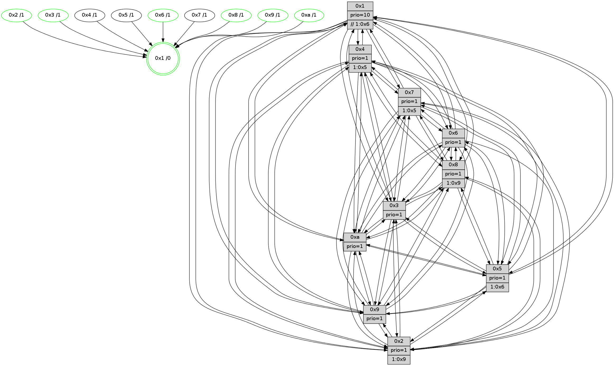

>> << IDX [start] -100 -25 -5 +0 +5 +25 +100 [1250.40430713]
 Previous packets
1245.000968 [Hello(7): seq=794 sym=2,3,5,6,4,8,9,10,1 sysInfo=hasWarning stat=2:6,14,2,2/3:11,4,3,1/5:11,1,15,2/6:13,11,2,10/4:2,3,12,1/8:10,0,3,0/9:3,0,1,1/10:14,8,2,6/1:5,14,8,0]
1245.008800 [Hello(8): seq=738 sym=5,2,3,7,9,6,4,10,1 sysInfo=hasWarning stat=5:5,5,10,0/2:1,4,9,11/3:7,7,13,1/7:11,9,3,0/9:2,7,11,4/6:8,6,12,14/4:8,1,1,0/10:13,11,15,4/1:1,9,10,0]
1245.013557 [Color(8) seq=393 @0:0 prio=1 >1.@6,1.@7,1.@9,1.@a]
----------------------------------------------------------------------
1245.675521 beacon01(faad) #0 coord=01,02,03,04,05,06,07,0a,09,08 cycle=688.0ms assoc
-- color-indic=1 64 11 c8
1245.685503 beacon02(faad) #0 coord=01,02,03,04,05,06,07,0a,09,08 cycle=688.0ms assoc 64 82 f9
1245.695503 beacon03(faad) #0 coord=01,02,03,04,05,06,07,0a,09,08 cycle=688.0ms assoc 64 f8 b4
1245.705505 beacon04(faad) #0 coord=01,02,03,04,05,06,07,0a,09,08 cycle=688.0ms assoc 64 8f 5e
1245.715507 beacon05(faad) #0 coord=01,02,03,04,05,06,07,0a,09,08 cycle=688.0ms assoc 64 f5 13
1245.725506 beacon06(faad) #0 coord=01,02,03,04,05,06,07,0a,09,08 cycle=688.0ms assoc 64 7b c4
1245.735505 beacon07(faad) #0 coord=01,02,03,04,05,06,07,0a,09,08 cycle=688.0ms assoc 64 01 89
1245.745510 beacon0a(faad) #0 coord=01,02,03,04,05,06,07,0a,09,08 cycle=688.0ms assoc 64 70 82
1245.755510 beacon09(faad) #0 coord=01,02,03,04,05,06,07,0a,09,08 cycle=688.0ms assoc 64 fe 55
1245.765510 beacon08(faad) #0 coord=01,02,03,04,05,06,07,0a,09,08 cycle=688.0ms assoc 64 84 18
1245.777412 [Hello(1): seq=704 sym=4,2,9,5,10,3,8,6,7 sysInfo=coloring-mode-on,ColoringModeRequestCalled stat=4:2,15,5,0/2:6,14,12,3/9:4,0,3,1/5:7,10,6,7/10:12,4,2,7/3:12,2,11,8/8:13,2,3,1/6:8,3,15,15/7:13,6,8,14]
1245.780447 [Color(10) seq=384 @0:0 prio=1]
1245.782072 [Hello(2): seq=791 sym=4,5,7,6,3,9,8,10,1 sysInfo=hasWarning stat=4:0,9,0,11/5:6,9,2,1/7:10,5,0,14/6:6,13,2,1/3:11,1,1,10/9:1,10,8,9/8:13,3,14,11/10:4,2,7,10/1:0,1,4,0]
1245.785561 [Hello(6): seq=795 sym=2,3,5,4,7,9,8,10,1 sysInfo=hasWarning stat=2:11,0,4,0/3:0,2,0,0/5:8,2,7,2/4:14,13,3,5/7:8,7,14,12/9:12,15,13,10/8:8,10,9,5/10:2,2,9,12/1:0,13,10,1]
1245.788081 [Color(9) seq=354 @0:0 prio=1]
1245.789823 [Color(2) seq=371 @0:0 prio=1 >1.@6,1.@7,1.@8,1.@9]
1245.793505 [Hello(3): seq=795 sym=1,7,6,2,4,8,9,10,5 sysInfo=hasWarning stat=1:1,1,10,0/7:10,8,6,12/6:9,2,2,0/2:7,2,7,0/4:8,4,8,11/8:1,2,3,4/9:9,8,12,0/10:11,5,1,4/5:4,0,15,0]
1245.795945 [Hello(5): seq=795 sym=7,6,4,3,1,9,8,10,2 sysInfo=hasWarning stat=7:8,11,0,13/6:9,2,12,3/4:7,4,8,13/3:12,11,9,15/1:0,11,9,0/9:9,15,6,10/8:4,9,5,3/10:2,0,6,8/2:8,0,9,7]
1245.799204 [Color(6) seq=427 @0:0 prio=1]
1245.803911 [Color(3) seq=424 @0:0 prio=1]
----------------------------------------------------------------------
1246.463653 beacon01(faad) #0 coord=01,02,03,04,05,06,07,0a,09,08 cycle=688.0ms assoc
-- color-indic=1 64 ad cd
1246.473634 beacon02(faad) #0 coord=01,02,03,04,05,06,07,0a,09,08 cycle=688.0ms assoc 64 3e fc
1246.483635 beacon03(faad) #0 coord=01,02,03,04,05,06,07,0a,09,08 cycle=688.0ms assoc 64 44 b1
1246.493636 beacon04(faad) #0 coord=01,02,03,04,05,06,07,0a,09,08 cycle=688.0ms assoc 64 33 5b
1246.503635 beacon05(faad) #0 coord=01,02,03,04,05,06,07,0a,09,08 cycle=688.0ms assoc 64 49 16
1246.513636 beacon06(faad) #0 coord=01,02,03,04,05,06,07,0a,09,08 cycle=688.0ms assoc 64 c7 c1
1246.523638 beacon07(faad) #0 coord=01,02,03,04,05,06,07,0a,09,08 cycle=688.0ms assoc 64 bd 8c
1246.533641 beacon0a(faad) #0 coord=01,02,03,04,05,06,07,0a,09,08 cycle=688.0ms assoc 64 cc 87
1246.543641 beacon09(faad) #0 coord=01,02,03,04,05,06,07,0a,09,08 cycle=688.0ms assoc 64 42 50
1246.553640 beacon08(faad) #0 coord=01,02,03,04,05,06,07,0a,09,08 cycle=688.0ms assoc 64 38 1d
1246.565137 [Hello(4): seq=795 sym=5,7,6,2,3,9,8,10,1 sysInfo= stat=5:15,11,7,0/7:14,15,11,1/6:1,4,12,13/2:7,8,2,15/3:14,14,12,13/9:4,1,1,1/8:9,0,4,1/10:11,7,1,14/1:13,2,10,1]
1246.568331 [Hello(9): seq=739 sym=2,5,3,4,7,6,8,10,1 sysInfo=hasWarning stat=2:10,9,5,9/5:1,3,6,6/3:9,1,12,1/4:0,14,5,0/7:2,7,9,1/6:4,15,2,12/8:14,2,7,4/10:11,5,11,4/1:1,8,12,1]
1246.571386 [Hello(10): seq=728 sym=6,2,3,8,7,5,9,4,1 sysInfo=hasWarning stat=6:10,2,5,2/2:12,12,8,11/3:11,8,12,12/8:11,3,2,2/7:14,10,11,6/5:10,11,2,15/9:3,0,12,4/4:1,9,11,0/1:4,1,5,1]
1246.574378 [Hello(8): seq=739 sym=5,2,3,7,9,6,4,10,1 sysInfo=hasWarning stat=5:5,5,10,0/2:2,5,9,11/3:8,8,13,1/7:11,9,3,0/9:3,8,11,4/6:9,7,12,14/4:9,1,1,0/10:13,12,15,4/1:2,9,10,0]
1246.577856 [Color(8) seq=394 @0:0 prio=1 >1.@9,1.@a]
1246.579485 [Hello(7): seq=795 sym=2,3,5,6,4,8,9,10,1 sysInfo=hasWarning stat=2:7,15,2,2/3:12,5,3,1/5:11,1,15,2/6:14,12,2,10/4:2,3,12,1/8:11,1,3,0/9:3,1,1,1/10:14,9,2,6/1:6,14,8,0]
1246.584111 [STC(1) #0.201 tree-change,inconsistent-stability,stable,to-color d=0]
1246.587984 [Color(1) seq=476 @0:0 prio=10 >>1.@6,1.@7,1.@8]
----------------------------------------------------------------------
1247.251783 beacon01(faad) #0 coord=01,02,03,04,05,06,07,0a,09,08 cycle=688.0ms assoc
-- color-indic=1 64 39 14
1247.261765 beacon02(faad) #0 coord=01,02,03,04,05,06,07,0a,09,08 cycle=688.0ms assoc 64 aa 25
1247.271765 beacon03(faad) #0 coord=01,02,03,04,05,06,07,0a,09,08 cycle=688.0ms assoc 64 d0 68
1247.281767 beacon04(faad) #0 coord=01,02,03,04,05,06,07,0a,09,08 cycle=688.0ms assoc 64 a7 82
1247.291766 beacon05(faad) #0 coord=01,02,03,04,05,06,07,0a,09,08 cycle=688.0ms assoc 64 dd cf
1247.301766 beacon06(faad) #0 coord=01,02,03,04,05,06,07,0a,09,08 cycle=688.0ms assoc 64 53 18
1247.311767 beacon07(faad) #0 coord=01,02,03,04,05,06,07,0a,09,08 cycle=688.0ms assoc 64 29 55
1247.321771 beacon0a(faad) #0 coord=01,02,03,04,05,06,07,0a,09,08 cycle=688.0ms assoc 64 58 5e
1247.331770 beacon09(faad) #0 coord=01,02,03,04,05,06,07,0a,09,08 cycle=688.0ms assoc 64 d6 89
1247.341772 beacon08(faad) #0 coord=01,02,03,04,05,06,07,0a,09,08 cycle=688.0ms assoc 64 ac c4
1247.354308 [STC(4)->1 #0.201 tree-change,inconsistent-stability,to-color d=1]
1247.355546 [Hello(5): seq=796 sym=7,6,4,3,1,9,8,10,2 sysInfo=hasWarning stat=7:9,11,0,13/6:9,3,12,3/4:8,4,8,13/3:12,12,9,15/1:0,12,10,0/9:10,15,6,10/8:5,10,5,3/10:3,0,6,8/2:8,0,9,7]
1247.358280 [STC(10)->1 #0.201 tree-change,inconsistent-stability,stable,to-color d=1]
1247.359609 [STC(8)->1 #0.201 tree-change,inconsistent-stability,stable,to-color d=1]
1247.361181 [STC(5)->1 #0.201 tree-change,inconsistent-stability,to-color d=1]
1247.362881 [Hello(2): seq=792 sym=4,5,7,6,3,9,8,10,1 sysInfo=hasWarning stat=4:1,9,0,11/5:6,9,2,1/7:11,5,0,14/6:6,14,2,1/3:12,2,1,10/9:2,10,8,9/8:14,4,14,11/10:5,2,7,10/1:1,2,5,0]
1247.366677 [STC(2)->1 #0.201 tree-change,inconsistent-stability,stable,to-color d=1]
1247.368963 [Color(2) seq=372 @0:0 prio=1 >1.@8,1.@9,1.@a]
1247.370522 [STC(9)->1 #0.201 tree-change,inconsistent-stability,stable,to-color d=1]
1247.372156 [Color(9) seq=355 @0:0 prio=1]
1247.373394 [Hello(3): seq=796 sym=1,7,6,2,4,8,9,10,5 sysInfo=hasWarning stat=1:2,2,11,0/7:11,8,6,12/6:9,2,2,0/2:7,2,7,0/4:9,4,8,11/8:2,3,3,4/9:10,8,12,0/10:12,5,1,4/5:5,0,15,0]
1247.376354 [Hello(1): seq=705 sym=4,2,9,5,10,3,8,6,7 sysInfo=coloring-mode-on,ColoringModeRequestCalled stat=4:3,15,5,0/2:7,15,12,3/9:5,1,3,1/5:7,10,6,7/10:12,5,2,7/3:13,3,11,8/8:13,2,3,1/6:9,4,15,15/7:13,6,8,14]
1247.379877 [STC(3)->1 #0.201 tree-change,inconsistent-stability,stable,to-color d=1]
1247.381257 [Color(10) seq=385 @0:0 prio=1]
1247.382811 [Color(3) seq=425 @0:0 prio=1]
1247.385122 [STC(6)->1 #0.201 tree-change,inconsistent-stability,stable,to-color d=1]
1247.387407 [Color(6) seq=428 @0:0 prio=1]
1247.392588 [STC(7)->1 #0.201 tree-change,inconsistent-stability,to-color d=1]
----------------------------------------------------------------------
1248.039915 beacon01(faad) #0 coord=01,02,03,04,05,06,07,0a,09,08 cycle=688.0ms assoc
-- color-indic=1 64 85 11
1248.049897 beacon02(faad) #0 coord=01,02,03,04,05,06,07,0a,09,08 cycle=688.0ms assoc 64 16 20
1248.059897 beacon03(faad) #0 coord=01,02,03,04,05,06,07,0a,09,08 cycle=688.0ms assoc 64 6c 6d
1248.069898 beacon04(faad) #0 coord=01,02,03,04,05,06,07,0a,09,08 cycle=688.0ms assoc 64 1b 87
1248.079898 beacon05(faad) #0 coord=01,02,03,04,05,06,07,0a,09,08 cycle=688.0ms assoc 64 61 ca
1248.089897 beacon06(faad) #0 coord=01,02,03,04,05,06,07,0a,09,08 cycle=688.0ms assoc 64 ef 1d
1248.099897 beacon07(faad) #0 coord=01,02,03,04,05,06,07,0a,09,08 cycle=688.0ms assoc 64 95 50
1248.109902 beacon0a(faad) #0 coord=01,02,03,04,05,06,07,0a,09,08 cycle=688.0ms assoc 64 e4 5b
1248.119902 beacon09(faad) #0 coord=01,02,03,04,05,06,07,0a,09,08 cycle=688.0ms assoc 64 6a 8c
1248.129904 beacon08(faad) #0 coord=01,02,03,04,05,06,07,0a,09,08 cycle=688.0ms assoc 64 10 c1
1248.141377 [Hello(4): seq=796 sym=5,7,6,2,3,9,8,10,1 sysInfo= stat=5:0,11,8,0/7:15,15,12,1/6:1,5,13,13/2:8,9,3,15/3:15,15,13,13/9:5,2,2,1/8:10,1,5,1/10:12,8,2,14/1:14,3,11,1]
1248.143954 [Hello(10): seq=729 sym=6,2,3,8,7,5,9,4,1 asym= sysInfo=hasWarning stat=6:10,3,6,2/2:12,12,8,11/3:11,9,12,12/8:12,4,2,2/7:15,10,12,6/5:11,11,2,15/9:3,0,12,4/4:1,9,12,0/1:4,2,6,1]
1248.147311 [Hello(9): seq=740 sym=2,5,3,4,7,6,8,10,1 sysInfo=hasWarning stat=2:10,9,5,9/5:2,3,6,6/3:10,2,13,1/4:0,14,6,0/7:3,7,10,1/6:4,0,3,12/8:15,3,7,4/10:12,6,11,4/1:2,9,13,1]
1248.151094 [Hello(8): seq=740 sym=5,2,3,7,9,6,4,10,1 sysInfo=hasWarning stat=5:5,5,11,0/2:3,6,10,11/3:9,9,14,1/7:12,9,4,0/9:4,9,12,4/6:9,8,13,14/4:10,1,1,0/10:13,13,15,4/1:3,10,11,0]
1248.154217 [Color(8) seq=395 @0:0 prio=1 >1.@9,1.@a]
1248.156543 [Color(1) seq=477 @0:0 prio=10 >>1.@6,1.@7,1.@8]
1248.158086 [Hello(7): seq=796 sym=2,3,5,6,4,8,9,10,1 sysInfo=hasWarning stat=2:7,15,2,2/3:12,5,3,1/5:11,1,15,2/6:14,12,2,10/4:2,3,12,1/8:11,1,3,0/9:3,1,1,1/10:14,9,2,6/1:6,15,9,0]
----------------------------------------------------------------------
1248.828046 beacon01(faad) #0 coord=01,02,03,04,05,06,07,0a,09,08 cycle=688.0ms assoc
-- color-indic=1 64 41 1f
1248.838028 beacon02(faad) #0 coord=01,02,03,04,05,06,07,0a,09,08 cycle=688.0ms assoc 64 d2 2e
1248.848029 beacon03(faad) #0 coord=01,02,03,04,05,06,07,0a,09,08 cycle=688.0ms assoc 64 a8 63
1248.858029 beacon04(faad) #0 coord=01,02,03,04,05,06,07,0a,09,08 cycle=688.0ms assoc 64 df 89
1248.868028 beacon05(faad) #0 coord=01,02,03,04,05,06,07,0a,09,08 cycle=688.0ms assoc 64 a5 c4
1248.878030 beacon06(faad) #0 coord=01,02,03,04,05,06,07,0a,09,08 cycle=688.0ms assoc 64 2b 13
1248.888030 beacon07(faad) #0 coord=01,02,03,04,05,06,07,0a,09,08 cycle=688.0ms assoc 64 51 5e
1248.898034 beacon0a(faad) #0 coord=01,02,03,04,05,06,07,0a,09,08 cycle=688.0ms assoc 64 20 55
1248.908034 beacon09(faad) #0 coord=01,02,03,04,05,06,07,0a,09,08 cycle=688.0ms assoc 64 ae 82
1248.918036 beacon08(faad) #0 coord=01,02,03,04,05,06,07,0a,09,08 cycle=688.0ms assoc 64 d4 cf
1248.930226 [Hello(1): seq=706 sym=4,2,9,5,10,3,8,6,7 sysInfo=coloring-mode-on,ColoringModeRequestCalled stat=4:4,15,5,0/2:7,15,12,3/9:5,1,3,1/5:7,10,6,7/10:13,6,2,7/3:13,4,12,8/8:13,2,3,1/6:9,5,0,15/7:14,6,9,14]
1248.932955 [Color(10) seq=386 @0:0 prio=1]
1248.934233 [Color(9) seq=356 @0:0 prio=1]
1248.935695 [Hello(6): seq=797 sym=2,3,5,4,7,9,8,10,1 sysInfo=hasWarning stat=2:11,0,4,0/3:0,3,0,0/5:9,2,7,2/4:0,13,4,5/7:10,7,15,12/9:14,15,13,10/8:10,12,9,5/10:4,3,9,12/1:1,15,11,1]
1248.938520 [Hello(3): seq=797 sym=1,7,6,2,4,8,9,10,5 sysInfo=hasWarning stat=1:2,3,11,0/7:12,8,7,12/6:9,3,3,0/2:7,2,7,0/4:10,4,9,11/8:3,4,3,4/9:11,8,12,0/10:13,5,1,4/5:6,0,15,0]
1248.941653 [Color(3) seq=426 @0:0 prio=1]
1248.947621 [Hello(2): seq=793 sym=4,5,7,3,9,8,10,1 sysInfo=hasWarning stat=4:2,9,1,11/5:7,9,2,1/7:12,5,1,14/3:13,3,2,10/9:3,11,9,9/8:15,5,14,11/10:6,3,7,10/1:2,3,5,0]
1248.950133 [Color(6) seq=429 @0:0 prio=1]
1248.954926 [Color(2) seq=373 @0:0 prio=1 >1.@9,1.@a]
----------------------------------------------------------------------
1249.616178 beacon01(faad) #0 coord=01,02,03,04,05,06,07,0a,09,08 cycle=688.0ms assoc
-- color-indic=1 64 fd 1a
1249.626160 beacon02(faad) #0 coord=01,02,03,04,05,06,07,0a,09,08 cycle=688.0ms assoc 64 6e 2b
1249.636159 beacon03(faad) #0 coord=01,02,03,04,05,06,07,0a,09,08 cycle=688.0ms assoc 64 14 66
1249.646161 beacon04(faad) #0 coord=01,02,03,04,05,06,07,0a,09,08 cycle=688.0ms assoc 64 63 8c
1249.656159 beacon05(faad) #0 coord=01,02,03,04,05,06,07,0a,09,08 cycle=688.0ms assoc 64 19 c1
1249.666167 beacon06(faad) #0 coord=01,02,03,04,05,06,07,0a,09,08 cycle=688.0ms assoc 64 97 16
1249.676162 beacon07(faad) #0 coord=01,02,03,04,05,06,07,0a,09,08 cycle=688.0ms assoc 64 ed 5b
1249.686165 beacon0a(faad) #0 coord=01,02,03,04,05,06,07,0a,09,08 cycle=688.0ms assoc 64 9c 50
1249.696165 beacon09(faad) #0 coord=01,02,03,04,05,06,07,0a,09,08 cycle=688.0ms assoc 64 12 87
1249.706166 beacon08(faad) #0 coord=01,02,03,04,05,06,07,0a,09,08 cycle=688.0ms assoc 64 68 ca
1249.717336 [Hello(7): seq=797 sym=2,3,5,6,4,8,9,10,1 sysInfo=hasWarning stat=2:8,0,2,2/3:13,6,3,1/5:11,1,15,2/6:15,13,2,10/4:2,3,12,1/8:11,1,3,0/9:3,2,1,1/10:14,10,2,6/1:7,15,9,0]
1249.722633 [Color(1) seq=478 @0:0 prio=10 >>1.@6,1.@7,1.@8]
1249.726852 [Hello(8): seq=741 sym=5,2,3,7,9,6,4,10,1 sysInfo=hasWarning stat=5:6,5,11,0/2:4,7,10,11/3:10,9,14,1/7:13,9,4,0/9:4,10,12,4/6:10,9,13,14/4:11,1,1,0/10:14,14,15,4/1:4,11,11,0]
1249.729990 [Color(8) seq=396 @0:0 prio=1 >1.@9,1.@a]
1249.732502 [Hello(9): seq=741 sym=2,5,3,4,7,6,8,10,1 sysInfo=hasWarning stat=2:11,10,5,9/5:3,3,6,6/3:11,2,13,1/4:0,14,6,0/7:4,7,10,1/6:5,1,3,12/8:0,4,7,4/10:12,6,11,4/1:3,10,13,1]
1249.735086 [Hello(10): seq=730 sym=6,2,3,8,7,5,9,4,1 sysInfo=hasWarning stat=6:11,4,6,2/2:13,13,8,11/3:12,10,12,12/8:13,5,2,2/7:0,10,12,6/5:11,11,2,15/9:4,1,12,4/4:1,9,12,0/1:5,3,6,1]